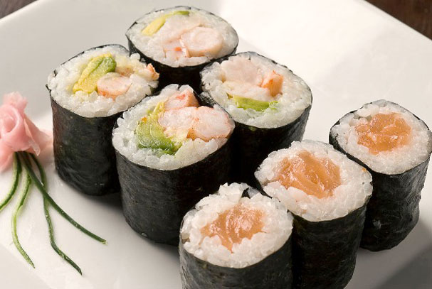

Bienvenido a Sushi Party
En Sushi Party nos dedicamos a la elaboración de sushi de la mejor calidad, con los mejores ingredientes y con el mejor sabor.
Si quieres probar el mejor sushi de la ciudad, no dudes en contactar con nosotros para tu reserva en la pagina de Contacto.

¿Quienes somos?
Somos una empresa dedicada a la elaboración de sushi de la mejor calidad, con los mejores ingredientes y con el mejor sabor.
Si quieres probar el mejor sushi de la ciudad, no dudes en contactar con nosotros para tu reserva en la pagina de Contacto.
